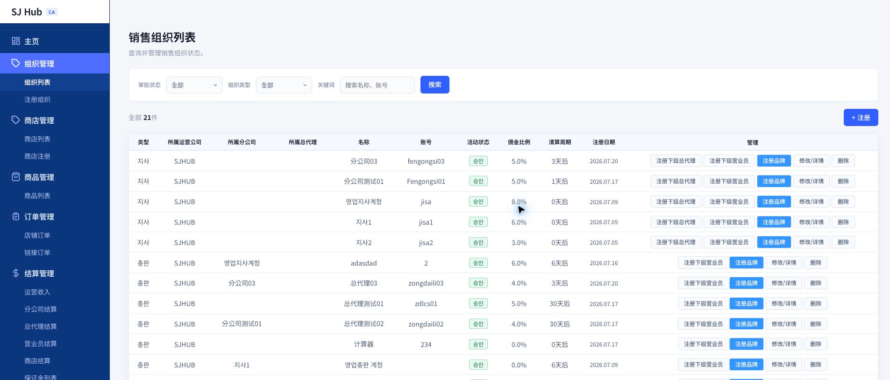

CHAPTER 2
조직관리
지사·총판·영업 조회 · 신규 등록 · 하위 조직 등록
조직 위계
조직 목록
조직 등록
하위 조직 등록
1
조직 위계 이해하기
CA 아래 영업 조직은 최대 3단계입니다. 상점(대리점)을 관리하기 전에 먼저 이 구조부터 이해하세요.
| 단계 | 한국어 | 중文 | 역할 |
|---|---|---|---|
| 1 | 지사 | 分公司 | CA 바로 아래 조직. 총판과 영업을 만들고 관리합니다. |
| 2 | 총판 | 总代理 | 지사 아래 조직. 소속 영업과 상점의 정산 흐름을 관리합니다. |
| 3 | 영업 | 营业员 | 현장에서 상점을 직접 등록하고 관리하는 실무 조직입니다. |
세 단계 모두 있어야 하는 것은 아닙니다. 지사 없이 총판만 있거나, 총판 없이 지사 밑에 바로 영업이 연결될 수도 있습니다. 실제 상점(매장)은 이 챕터가 아니라 상점관리에서 별도로 등록합니다.
1
조직 목록 화면 (组织列表)
등록된 모든 지사·총판·영업을 조회하고, 여기서 하위 조직·상점 등록, 수정·삭제까지 처리합니다.

1
2
3
사용 방법
1
검색 필터로 좁혀보기
승인상태(전체/승인/신청중/정지), 조직구분(전체/지사/총판/영업), 명칭·계정 검색어로 원하는 조직만 걸러볼 수 있습니다.
2
테이블에서 상태 확인
유형(지사/총판/영업), 소속 상위조직, 명칭·계정, 활동상태, 수수료비율, 정산주기, 등록일을 확인합니다.
3
행별 관리 버튼 사용
지사 행에는 "하위 총판 등록"·"하위 영업 등록"이, 총판 행에는 "하위 영업 등록"만 보입니다. "수정/상세"로 정보를 고치고, "삭제"로 제거합니다(되돌릴 수 없음).
화면 표시 주의 — "유형"과 "활동상태" 칸의 실제 값(지사/총판/영업, 승인 등)은 아직 한국어로 표시됩니다. 삭제 확인창 문구도 한국어("삭제 하시겠습니까?")로 뜹니다.
2
"상점 등록" 버튼 이용 시 참고사항
행마다 있는 파란색 "상점 등록(注册品牌)" 버튼은 경로 설정 오류로 현재 다른 화면으로 연결됩니다.
경로 설정 오류로 인해 이 버튼을 누르면 아직 중국어로 번역되지 않은 한국어 화면으로 연결됩니다. 추후 업데이트를 통해 정식 상점등록 화면으로 연결되도록 수정될 예정입니다. 그 전까지는 상점을 새로 등록할 때 상점관리 > 상점등록 메뉴를 이용하세요.
1
기본정보 & 기업정보 입력
CA 바로 아래에 새 지사·총판·영업을 등록합니다. 여기서 등록하면 항상 CA 직속으로 생성됩니다.

1
2
3
4
5
사용 방법
1
유형 선택 (필수)
지사/총판/영업 중 하나를 고릅니다. 명칭·로그인 계정·비밀번호도 함께 입력합니다(모두 필수).
2
비밀번호 입력 시 주의
로그인 비밀번호 칸은 화면에 글자가 그대로 보이는 형태(마스킹 없음)입니다. 다른 사람이 볼 수 있는 환경에서는 주의하세요.
3
기업정보 입력
기업명·영업허가증번호(숫자만)·은행명·계좌번호(숫자만)·예금주는 필수, 대표자명·연락처·이메일·주소는 선택입니다.
4
수수료비율 · 정산주기 설정
선택 항목이지만, 정산 계산에 바로 쓰이는 핵심 값입니다. 나중에 "수정/상세"에서 바꿀 수 있습니다.
5
제출하기
"제출"을 누르면 확인창이 뜨고, 확인하면 즉시 등록됩니다. "취소"를 누르면 조직 목록으로 돌아갑니다.
💬 등록 안내 문구(실제 화면): "여기서 등록하시면 운영사(CA)와 바로 연결됩니다. 특정 지사·총판 밑에 연결하려면, 등록 후 조직 목록에서 연결해야 합니다."
1
하위 조직 등록하기
지사 밑에 총판을, 총판(또는 지사) 밑에 영업을 새로 만들려면 "조직 등록" 탭이 아니라 조직 목록 화면의 버튼을 사용해야 합니다.
1
2
사용 방법
1
목록에서 상위 조직 행의 버튼 클릭
조직 목록 탭에서 상위가 될 조직(지사 또는 총판)의 행을 찾아 "하위 총판 등록" 또는 "하위 영업 등록" 버튼을 누릅니다.
2
나머지 정보 입력
상위조직이 이미 선택된 상태로 등록 화면이 열립니다. 나머지 항목은 "조직 등록" 탭과 동일하게 입력합니다.
용어 안내 — 이 화면에서는 "유형" 항목이 "구분"이라는 이름으로 표시될 수 있습니다. 같은 항목을 가리키는 다른 표기이니 혼동하지 마세요.